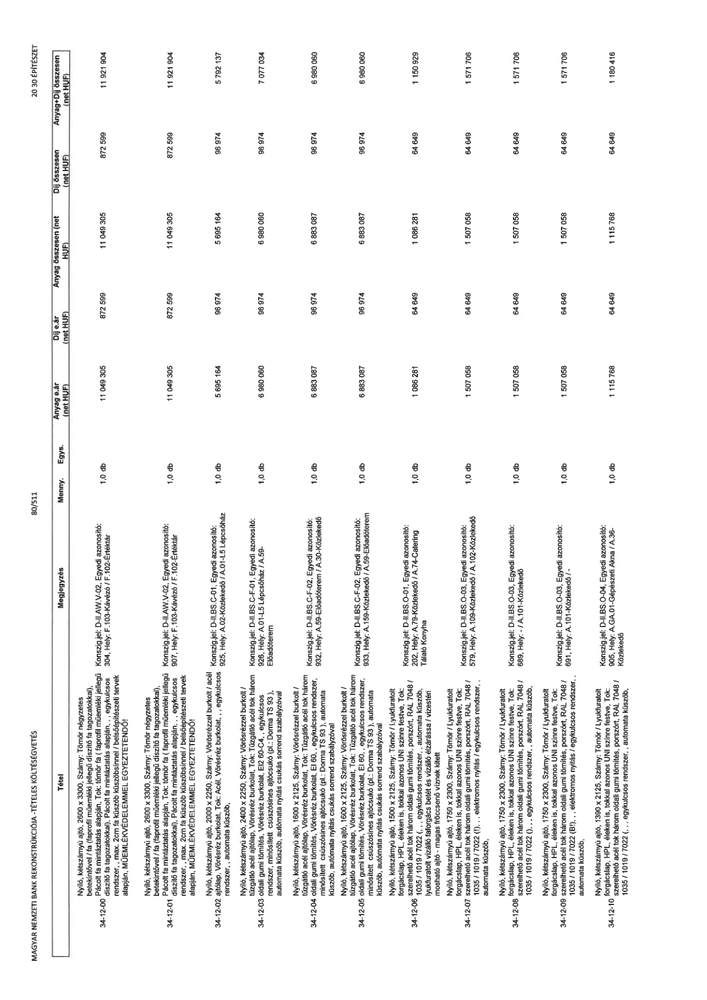

| Tétel | Megjegyzés | Menny. | Egys. | Anyag e.ár (net HUF) | Díj e.ár (net HUF) | Anyag összesen (net HUF) | Díj összesen (net HUF) | Anyag+Díj összesen (net HUF) |
|---|---|---|---|---|---|---|---|---|
| 34-12 Belső nyílászárók speciális acélból | NaN | NaN | NaN | 0 | 0 | 0 | 0 | 0 |
| 34-12-00 Nyíló, kétszárnyú ajtó, 2600 x 3300, Szárny: Tömör kör betekintővel / fa (faprofil műemléki jellegű díszítő fa tagozatokkal), Pácolt fa mintáztatás alapján, ,, egykulcsos rendszer, , max. 2cm fa küszöb küszöbsínnel / belsőépítészeti tervek alapján, MŰEMLÉKVÉDELEMMEL EGYEZTETENDŐ! | Konszig jel: D-II.AW.V-02, Egyedi azonosító: 304, Hely: F.103-Kávézó / F.102-Értéktár | 1,0 | db | 11 049 305 | 872 599 | 11 049 305 | 872 599 | 11 921 904 |
| 34-12-01 Nyíló, kétszárnyú ajtó, 2600 x 3300, Szárny: Tömör kör betekintővel / fa (faprofil műemléki jellegű díszítő fa tagozatokkal), Pácolt fa mintáztatás alapján, ,, egykulcsos rendszer, , max. 2cm fa küszöb küszöbsínnel / belsőépítészeti tervek alapján, MŰEMLÉKVÉDELEMMEL EGYEZTETENDŐ! | Konszig jel: D-II.AW.V-02, Egyedi azonosító: 907, Hely: F.103-Kávézó / F.102-Értéktár | 1,0 | db | 11 049 305 | 872 599 | 11 049 305 | 872 599 | 11 921 904 |
| 34-12-02 Nyíló, kétszárnyú ajtó, 2000 x 2250, Szárny: Vörösrézzel burkolt / acél tűzgátló acél ajtólap, Vörösréz burkolat, Tok: Tűzgátló acél tok három oldali gumi tömítés, Vörösréz burkolat, ,, egykulcsos rendszer, , automata küszöb, | Konszig jel: D-II.BS.C-01, Egyedi azonosító: 925, Hely: A.02-Közlekedő / A.01-L5 Lépcsőház | 1,0 | db | 5 695 164 | 96 974 | 5 695 164 | 96 974 | 5 792 137 |
| 34-12-03 Nyíló, kétszárnyú ajtó, 2400 x 2250, Szárny: Vörösrézzel burkolt / acél tűzgátló acél ajtólap, Vörösréz burkolat, Tok: Tűzgátló acél tok három oldali gumi tömítés, Vörösréz burkolat, EI2 60-C4, ,, egykulcsos rendszer, minősített csúszósínes ajtócsukó (pl.: Dorma TS 93), automata küszöb, automata nyitás csukás sorrend szabályzóval | Konszig jel: D-II.BS.C-F-01, Egyedi azonosító: 926, Hely: A.01-L5 Lépcsőház / A.59-Előadóterem | 1,0 | db | 6 980 060 | 96 974 | 6 980 060 | 96 974 | 7 077 034 |
| 34-12-04 Nyíló, kétszárnyú ajtó, 1600 x 2125, Szárny: Vörösrézzel burkolt / acél tűzgátló acél ajtólap, Vörösréz burkolat, Tok: Tűzgátló acél tok három oldali gumi tömítés, Vörösréz burkolat, EI 60, ,, egykulcsos rendszer, minősített csúszósínes ajtócsukó (pl.: Dorma TS 93 ), automata küszöb, automata nyitás csukás sorrend szabályzóval | Konszig jel: D-II.BS.C-F-02, Egyedi azonosító: 932, Hely: A.59-Előadóterem / A.30-Közlekedő | 1,0 | db | 6 883 087 | 96 974 | 6 883 087 | 96 974 | 6 980 060 |
| 34-12-05 Nyíló, kétszárnyú ajtó, 1600 x 2125, Szárny: Vörösrézzel burkolt / acél tűzgátló acél ajtólap, Vörösréz burkolat, Tok: Tűzgátló acél tok három oldali gumi tömítés, Vörösréz burkolat, EI 60, ,, egykulcsos rendszer, minősített csúszósínes ajtócsukó (pl.: Dorma TS 93 ), automata küszöb, automata nyitás csukás sorrend szabályzóval | Konszig jel: D-II.BS.C-F-02, Egyedi azonosító: 933, Hely: A.159-Közlekedő / A.59-Előadóterem | 1,0 | db | 6 883 087 | 96 974 | 6 883 087 | 96 974 | 6 980 060 |
| 34-12-06 Nyíló, kétszárnyú ajtó, 1500 x 2125, Szárny: Tömör / Lyukfuratolt forgácslap, HPL, éleken is, tokkal azonos UNI színre festve, Tok: horganyzott acél tok három oldali gumi tömítés, porszórt, RAL 7048 / 1035 / 1019 / 7022 (,), ,, egykulcsos rendszer, automata küszöb, lyukfuratolt vízálló forgácslap betét és vízálló élzárása / vizesen mosható ajtó - magas fröccsenő víznek kitett | Konszig jel: D-II.BS.O-01, Egyedi azonosító: 202, Hely: A.79-Közlekedő / A.74-Catering Tálaló Konyha | 1,0 | db | 1 086 281 | 64 649 | 1 086 281 | 64 649 | 1 150 929 |
| 34-12-07 Nyíló, kétszárnyú ajtó, 1750 x 2300, Szárny: Tömör / Lyukfuratolt forgácslap, HPL, éleken is, tokkal azonos UNI színre festve, Tok: szerelhető acél tok három oldali gumi tömítés, porszórt, RAL 7048 / 1035 / 1019 / 7022 ( ! ), ,, elektromos nyitás / egykulcsos rendszer, automata küszöb, | Konszig jel: D-II.BS.O-03, Egyedi azonosító: 579, Hely: A.109-Közlekedő / A.102-Közlekedő | 1,0 | db | 1 507 058 | 64 649 | 1 507 058 | 64 649 | 1 571 706 |
| 34-12-08 Nyíló, kétszárnyú ajtó, 1750 x 2300, Szárny: Tömör / Lyukfuratolt forgácslap, HPL, éleken is, tokkal azonos UNI színre festve, Tok: szerelhető acél tok három oldali gumi tömítés, porszórt, RAL 7048 / 1035 / 1019 / 7022 ( ! ), ,, egykulcsos rendszer, , automata küszöb, | Konszig jel: D-II.BS.O-03, Egyedi azonosító: 689, Hely: - / A.101-Közlekedő | 1,0 | db | 1 507 058 | 64 649 | 1 507 058 | 64 649 | 1 571 706 |
| 34-12-09 Nyíló, kétszárnyú ajtó, 1750 x 2300, Szárny: Tömör / Lyukfuratolt forgácslap, HPL, éleken is, tokkal azonos UNI színre festve, Tok: szerelhető acél tok három oldali gumi tömítés, porszórt, RAL 7048 / 1035 / 1019 / 7022 ( ! ), ,, elektromos nyitás / egykulcsos rendszer, automata küszöb, | Konszig jel: D-II.BS.O-03, Egyedi azonosító: 691, Hely: A.101-Közlekedő / - | 1,0 | db | 1 507 058 | 64 649 | 1 507 058 | 64 649 | 1 571 706 |
| 34-12-10 Nyíló, kétszárnyú ajtó, 1300 x 2125, Szárny: Tömör / Lyukfuratolt forgácslap, HPL, éleken is, tokkal azonos UNI színre festve, Tok: szerelhető acél tok három oldali gumi tömítés, porszórt, RAL 7048 / 1035 / 1019 / 7022 ( , ), ,, egykulcsos rendszer, , automata küszöb, | Konszig jel: D-II.BS.O-04, Egyedi azonosító: 905, Hely: A.GA.01-Gépészeti Akna / A.36-Közlekedő | 1,0 | db | 1 115 768 | 64 649 | 1 115 768 | 64 649 | 1 180 416 |
